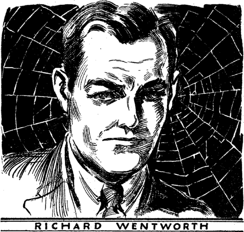
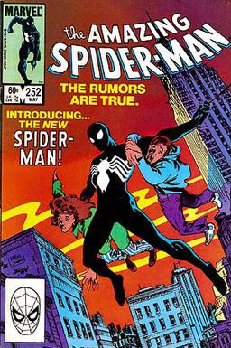

<!DOCTYPE html>
<html lang="en">
<head>
    <meta charset="UTF-8">
    <meta name="viewport" content="width=device-width, initial-scale=1.0">
    <title>Spidyyyyy</title>
    <link rel="stylesheet" href="style.css">
</head>
<body>
    <!-- <h1>Spider Man</h1>
    
    <h2>About</h2>
    <p>
        <b>Spider-Man</b> is a superhero in American comic books published by
        <a href="https://en.wikipedia.org/wiki/Marvel_Comics">Marvel Comics.</a> Created by writer-editor <b>Stan Lee</b> and artist <b>Steve Ditko</b>, he first appeared in the anthology comic book
        <a href="https://en.wikipedia.org/wiki/Amazing_Fantasy">Amazing Fantasy</a> 
        #15 (August 1962) in the <a href="#">Silver Age of Comic Books</a>. Widely regarded as one of the most popular and commercially successful superheroes, he has been featured in comic books, television shows, films, video games, novels, and plays.
    </p>
    <div class="box">
        <h4>Publication Info</h4>
        <ul>
            <li><a href="#" class="boxLink">Publisher</a></li>
            <li><a href="#" class="boxLink">First Appearence</a></li>
            <li>
                Created by
                <ul>
                    <li><a href="#" class="boxLink">Stan Lee</a></li>
                    <li><a href="#" class="boxLink">Steve Ditko</a></li>
                </ul>
            </li>
        </ul>
    </div>
    <h2>Creation and development</h2>
    <p id="description">
        In 1962, with the success of the Fantastic Four, Marvel Comics editor and head writer Stan Lee was looking for a new superhero idea. He said the teenage demand for comic books and a character with whom they could identify led to the creation of Spider-Man.[2] As with Fantastic Four, Lee saw Spider-Man as an opportunity to "get out of his system" what he felt was missing in comic books.[3]

There are many conflicting stories about the inspiration and precise authorship of the various aspects of Spider-Man's appearance and character.[4] In his autobiography, Lee cites the non-superhuman pulp magazine crime fighter the Spider as a great influence.[1] Besides the name, the Spider was wanted by both the law and the criminal underworld (a defining theme of Spider-Man's early years) and had through years of ceaseless struggle developed a "sixth sense", which warns him of danger, the inspiration for Spider-Man's "spider-sense".[5] In a multitude of print and video interviews, Lee also says he was inspired by seeing a spider climb up a wall—adding in his autobiography that he has told that story so often he has become unsure of whether or not this is true.
    </p>
    <div class="images">
        
        
        
    </div> -->
    <script src="app.js"></script>
</body>
</html>